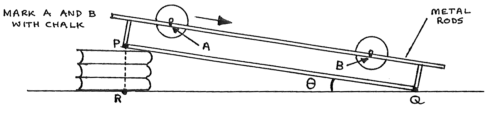
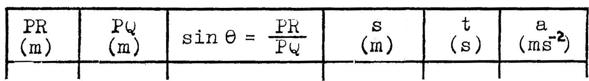

B3-1: The Moment of Inertia of a Cylinder¶

Apparatus¶
2 mounted rails; 2 different cylinders with axles; metre rule; micrometer screw gauge; stack of books; stop watch; piece of chalk; triple beam balance; graph paper
Procedure¶
- Set up the apparatus as shown above with \(PR\) less than 4 cm. Measure \(s=AB\) and measure \(PQ\). Record \(s\) and \(PQ\).
- Measure and record \(PR\). Calculate \(\sin\theta = \frac{PR}{PQ}\).
- Place a cylinder at \(A\). Record the time, \(t\), for the cylinder, starting from rest, to roll from \(A\) to \(B\).
- Determine the linear acceleration, \(a\), of the cylinder using your readings of \(s\) and \(t\).
- Increase \(PR\) and repeat steps 2, 3, and 4. Increase \(PR\) three more times, repeating steps 2, 3, and 4 to obtain five sets of readings.
- Measure the axle diameter and find the axle radius, \(r_a\). Find the cylinder radius, \(r\). Measure the mass, \(M\), of the cylinder and axle.
- Repeat steps 2 to 6 for the second cylinder.
Observations¶
For each cylinder:
\(M\) =________kg
\(r_a\) =________m
\(r\) =________m
Tabulate:

Theory¶
The cylinder loses potential energy (\(PE\)) and gains kinetic energy (\(KE\)) as it moves from A to B. Conservation of energy requires:
\[\begin{split}\text{PE lost} &= \text{KE gained} \\
Mgh &= Mgs\ (\sin\theta) \\\end{split}\]
Ignoring friction this becomes the \(KE\) of the cylinder where the total \(KE\) is:
\[\begin{split}KE = \text{KE (linear) }+\text{ KE (rotational)} \\\end{split}\]
Therefore:
\[\begin{split}Mgs\ (\sin\theta) &= \frac{1}{2}Mv^2+\frac{1}{2}I\omega ^2 \\\end{split}\]
Substitute \(v^2 = 2as\) and \(\omega = \frac{v}{r_a}\) :
\[a = \left(\frac{Mgr_a^2}{Mr_a^2 + I}\right) (\sin\theta) \qquad \qquad \text{(check this yourself!)}\]
Analysis¶
- Plot a graph of \(a\) against \(\sin\theta\) for each cylinder on the same sheet of graph paper. Find the gradient of each line.
- Given that \(a=(\frac{Mgr_a^2}{Mr_a^2 + I})\sin\theta\) find \(I\) for each cylinder.
- From theory \(I = \frac{1}{2}Mr^2\) where \(r = \text{cylinder radius}\). Calculate \(I\) using this to check your value from 2 above. Give the % error for your value from 2.
- If \(I = Mk\), find the radius of gyration, \(k\), for each cylinder.
- Calculate the torque necessary to steadily accelerate each cylinder from rest to an angular velocity of 30 radians/s in 2s.